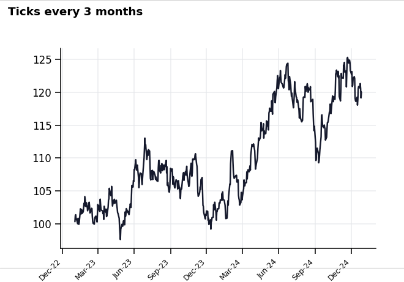
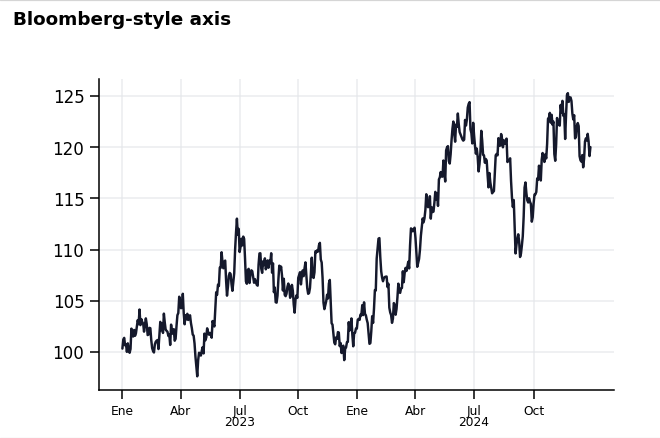
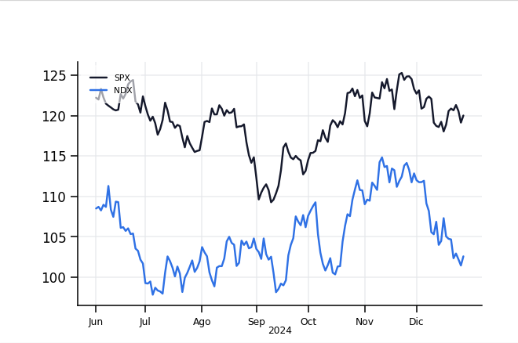
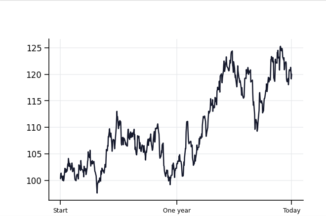
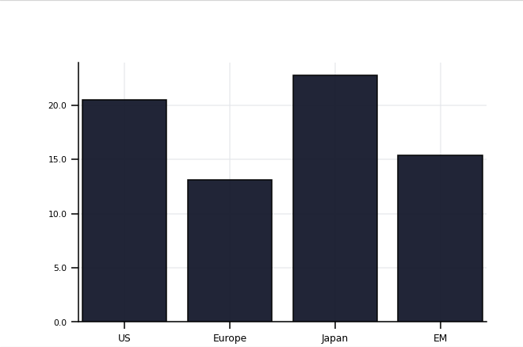
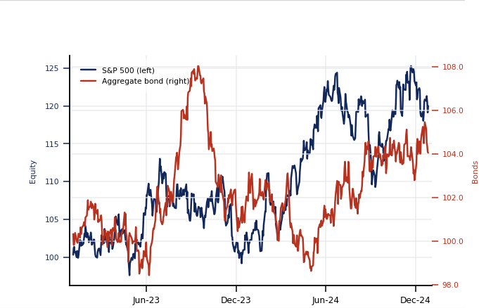
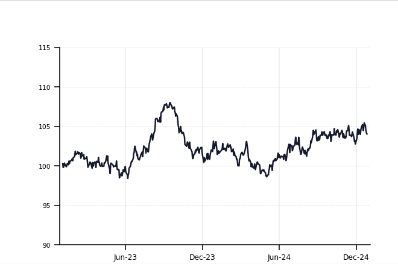

Axes¶
Every chart method takes an x_axis argument to format the x-axis, and the method config_yaxis() formats the y-axes (left and right). get_axis() gives you the raw Matplotlib axis for anything not covered.
import numpy as np
import pandas as pd
import helpers_ps as hp
hp.set_graph_theme()
rng = np.random.default_rng(42)
dates = pd.bdate_range("2023-01-02", periods=520)
rets = rng.normal([0.0004, 0.0006, 0.0002], [0.009, 0.013, 0.004], size=(len(dates), 3))
prices = pd.DataFrame(
100 * np.exp(rets.cumsum(axis=0)),
index=dates,
columns=["SPX", "NDX", "AGG"],
)
X axis¶
x_axis is a dictionary (or an XAxisConfig). The method that interprets it is prep_x_axis() (see the API reference), which looks at the type of the index and picks one of four modes:
| Index | Mode | What you get |
|---|---|---|
DatetimeIndex |
datetime |
A real time axis. Ticks every tick_step months, labels formatted with fmt (default %b-%y). Weekends are visible as gaps. |
DatetimeIndex + bbg_format=True |
bbg |
Bloomberg-style: one position per observation (no gaps), month labels with the year below. tick_step counts months. |
| Numeric index | numeric |
Ticks every tick_step observations, labels with fmt (default ",.0f"). |
| Anything else (text) | categorical |
One position per category, ticks every tick_step categories. |
Options¶
| Key | Default | Description |
|---|---|---|
bbg_format |
False |
Bloomberg-style axis (dates only). |
tick_step |
6 |
Spacing of ticks (see the table above for the unit of each mode). Must be a positive integer. |
fmt |
None |
Format of the labels: strftime for dates ("%b-%y", "%Y"), a format spec for numbers (",.0f", ".1%"). |
lim |
None |
(start, end) tuple. Filters the rows of the DataFrame before drawing. Either side can be None. |
tick_values |
None |
Explicit positions of the ticks. Dates, numbers or category names (or positions). |
tick_labels |
None |
Text of each tick (same length as tick_values). |
tick_label_map |
None |
Dictionary to rename some labels: {"Jan-24": "Start"}. |
fontsize |
8 |
Label size. |
rotation, ha, va |
0, "center", "top" |
Label rotation and alignment. |
label_color |
None |
Label color. |
show_years |
True |
Year labels under a Bloomberg-style axis. |
year_y_offset |
-0.08 |
Vertical position of those year labels. |
Regular time axis¶
g = (
hp.GraphMtplt(prices)
.graph_line(series=[{"ticker": "SPX"}], x_axis={"fmt": "%b-%y", "tick_step": 3, "rotation": 45, "ha": "right"})
.add_title("Ticks every 3 months")
)

Bloomberg-style axis¶
Removes the gaps of non-trading days and prints each year centered below its months. Month names are Spanish abbreviations unless fmt is given.
g = (
hp.GraphMtplt(prices)
.graph_line(series=[{"ticker": "SPX"}], x_axis={"bbg_format": True, "tick_step": 3})
.add_title("Bloomberg-style axis")
)

Restrict the period¶
lim removes rows outside the range, so all charts and tags use only that period:
g = (
hp.GraphMtplt(prices)
.graph_line(
series=[{"ticker": "SPX"}, {"ticker": "NDX"}],
x_axis={"bbg_format": True, "tick_step": 1, "lim": ("2024-06-01", None)},
)
.add_legend()
)

Custom ticks and labels¶
g = (
hp.GraphMtplt(prices)
.graph_line(
series=[{"ticker": "SPX"}],
x_axis={
"tick_values": ["2023-01-02", "2024-01-02", "2024-12-27"],
"tick_labels": ["Start", "One year", "Today"],
},
)
)

Categorical axis¶
For text indexes the ticks are positions (tick_step=6 by default, so use 1 to show every category). tick_label_map renames individual labels:
by_country = pd.DataFrame(
{"P/E": [20.5, 13.1, 22.8, 15.4]},
index=["US", "Europe", "Japan", "EM"],
)
g = (
hp.GraphMtplt(by_country)
.graph_bar(x_axis={"tick_step": 1, "tick_label_map": {"US": "United States", "EM": "Emerging"}})
.config_yaxis(fmt=".1f")
)

Box plots and pies
graph_box_whiskers() reads fontsize, rotation, ha, va, label_color, tick_labels and tick_label_map from x_axis to format the names under each box. graph_dist() reads fmt, tick_values, tick_labels, lim... for its numeric axis (see Distribution). graph_pie() has no x-axis.
Y axes: config_yaxis¶
config_yaxis() acts on the left axis by default or on the right axis with side="right". Calls can be chained: each one configures one side.
| Parameter | Default | Description |
|---|---|---|
lim |
None |
(min, max) of the axis. |
fmt |
None |
Number format of the ticks: ",.0f", ".1%", ",.2f". |
fontsize |
7 |
Tick label size. |
tick_step |
None |
Fixed spacing between ticks (in axis units). |
label, label_fontsize, label_color |
None |
Axis title and its style. |
tick_color, spine_color |
None |
Colors of the ticks and of the axis line. |
margins_x |
0.01 |
Horizontal margin around the data. |
side |
None (left) |
"left" or "right". |
ax |
None |
A specific Matplotlib axis. |
Two axes¶
Give each series its axis_side and format each side separately:
g = (
hp.GraphMtplt(prices)
.graph_line(series=[
{"ticker": "SPX", "label": "S&P 500 (left)", "axis_side": "left", "color": "#12275A"},
{"ticker": "AGG", "label": "Aggregate bond (right)", "axis_side": "right", "color": "#B7331F"},
])
.config_yaxis(side="left", fmt=",.0f", label="Equity", label_color="#12275A", spine_color="#12275A", tick_color="#12275A")
.config_yaxis(side="right", fmt=",.1f", label="Bonds", label_color="#B7331F", spine_color="#B7331F", tick_color="#B7331F")
.add_legend()
)

Right-axis legend
add_legend() merges the entries of both axes (include_right_axis=True).
Axis limits and tick spacing¶
g = (
hp.GraphMtplt(prices)
.graph_line(series=[{"ticker": "AGG"}])
.config_yaxis(lim=(90, 115), tick_step=5, fmt=",.0f")
.horizontal_guides(mostrar_cero=False)
)

The raw Matplotlib axis¶
get_axis(side="left") returns the matplotlib.axes.Axes of the active subplot ("right" returns the secondary axis if the chart has one). Use it for anything the API does not cover:
ax = g.get_axis()
ax.set_ylabel("Index level")
ax.annotate("Rate hike", xy=(pd.Timestamp("2024-03-20"), 105), xytext=(10, 20), textcoords="offset points")
The complete figure is available with g.show() (see Export).
Selecting the active subplot¶
In a multi-panel figure, axis(i) selects the subplot where the next chart / decoration goes (0 = top-left, counting row by row). See Plotting.